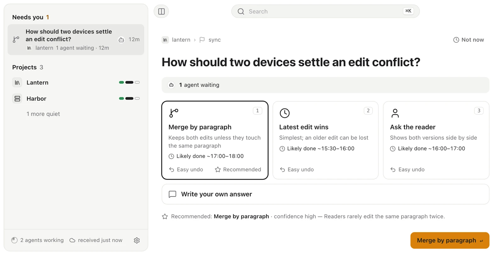
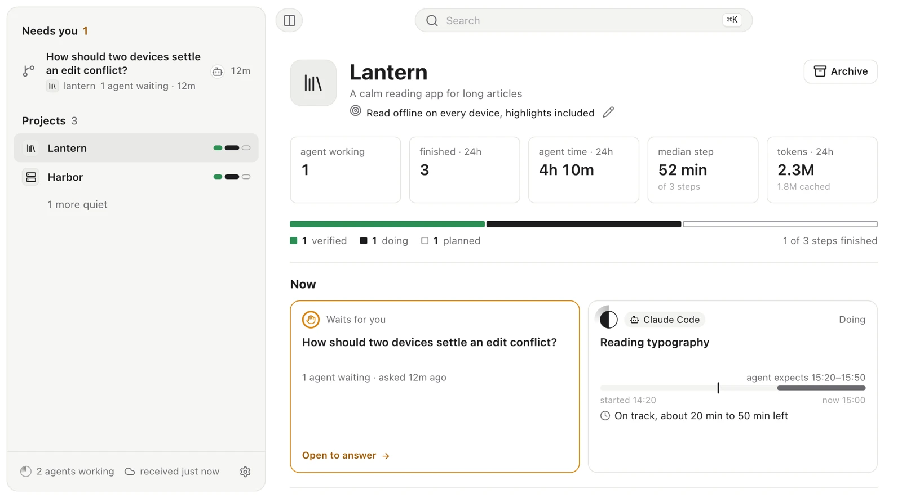
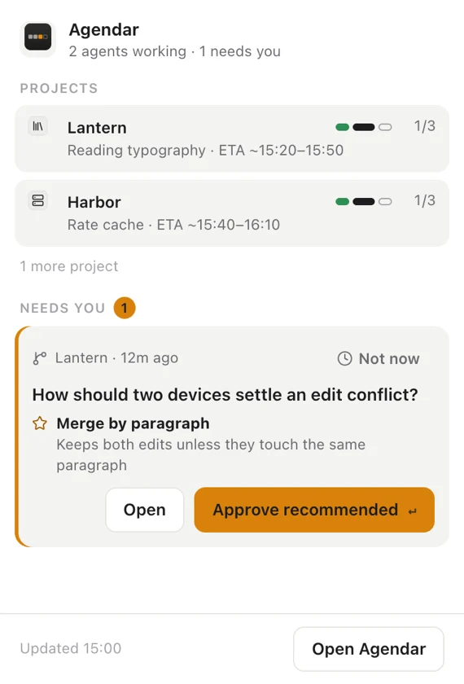

An agenda for your AI coding agents
It lists only what needs you. Your answer wakes the agent session that asked.
Free and open source. macOS, Windows and Linux.
All clear
- Lantern
- Harbor
- Field notes
You run several coding agents across repositories. Most of the time they do not need you. When one hits a decision that is yours, the question sits in a terminal tab you are not looking at, and the agent waits in silence or guesses. Agendar gives every agent one place to report its plan and one way to ask.
Every question arrives as a card
The question, two to four options with what each one costs, the agent's recommendation and why, and what your answer unblocks. Pick an option or write your own; the agent gets a receipt with done when criteria.

How it works
-
Agents report
Through the
agendarCLI or its MCP server, an agent declares the steps it plans, marks each one started and finished, and sends a short pulse as it goes. -
Agents ask
When a decision is yours, the agent sends a card. It also says when it may go ahead with its recommendation if you stay silent.
-
You answer
From the app, the menu bar or the notification. Questions are ranked by how many agents wait on them and for how long.
-
The same session continues
Hooks hold Claude Code and Codex sessions open until you answer; other agents read their inbox. The agent applies your answer and reports back to the plan.
What you see


- Needs you, ranked by cost of delay
- Waiting agents times how long they have waited, weighted by how hard the choice is to undo.
- Projects, step by step
- One square per step, what each agent is doing now, and a finish forecast calibrated on how long past steps took.
- A plan graph
- Steps and their dependencies. A question shows which steps it unblocks.
- The menu bar
- The top question with Approve recommended. Easy questions can be answered straight from the notification.
- No server
- Each machine appends to its own files in a folder you choose: iCloud Drive, Dropbox, Syncthing or a local folder. Several machines can share one agenda.
- Three languages
- English, 简体中文 and 繁體中文, in light and dark.
Works with your agents
| Agent | How it connects |
|---|---|
| Claude Code | Hooks: the session waits for your answer and continues |
| Codex | Hooks |
| Cursor, Gemini CLI, Antigravity, opencode, pi | MCP server (agendar mcp) |
| Anything that runs a shell | The agendar CLI and the Agent Skill |
npx skills add Maolon/agendar -g
The Agent Skill teaches agents the loop. Connect them in Settings > Agents, or let an agent run agendar bind.
Install
Download the app for your platform. On first launch, Setup picks the folder for your agenda and links agendar onto your PATH.
| Platform | File |
|---|---|
| macOS, Apple silicon | Agendar_aarch64.dmg |
| macOS, Intel | Agendar_x64.dmg |
| Windows | Agendar_x64-setup.exe |
| Linux | Agendar_amd64.deb Agendar_amd64.AppImage |
Each release also has the agendar CLI on its own for machines that only run agents, and a .sha256 checksum for every file.
macOS: the app is not notarized yet. The first time, open it, then go to System Settings > Privacy & Security and choose Open Anyway. Or run xattr -dr com.apple.quarantine /Applications/Agendar.app once.
Windows: SmartScreen may warn about an unknown publisher; choose More info > Run anyway.
Status
Agendar is young and used every day to track its own development. macOS is the platform it is tested on. Windows and Linux build and pass the tests in CI but have seen little real use. Sharing one agenda across machines is built in and tested with simulated hosts; real multi-machine use is still thin.
Frequently asked questions
What is Agendar?
A desktop app and CLI that gives your AI coding agents one place to report their plan and one way to ask you for a decision. It lists only what needs your call, and your answer wakes the agent session that asked.
Which coding agents does it work with?
Claude Code and Codex connect through hooks, so the session waits for your answer and continues. Cursor, Gemini CLI, Antigravity, opencode and pi connect through the MCP server (agendar mcp). Anything that runs a shell can use the agendar CLI and the Agent Skill.
Does it need a server? Where is my data kept?
No server. Each machine appends to its own files in a folder you choose: iCloud Drive, Dropbox, Syncthing or a local folder. The app works offline, and several machines can share one agenda.
Which platforms does it run on?
macOS (Apple silicon and Intel), Windows and Linux (.deb or .AppImage). Each release also has the agendar CLI on its own for machines that only run agents. macOS is the platform it is tested on; Windows and Linux build and pass the tests in CI but have seen little real use.
How does my answer reach the agent?
You answer from the app, the menu bar or the notification, and the answer becomes a receipt with done when criteria. Hooks hold Claude Code and Codex sessions open until you answer; other agents read their inbox. The agent applies the receipt, acknowledges it and reports the result back to the plan.
What does it cost?
Nothing. Agendar is free and open source under the MIT license.